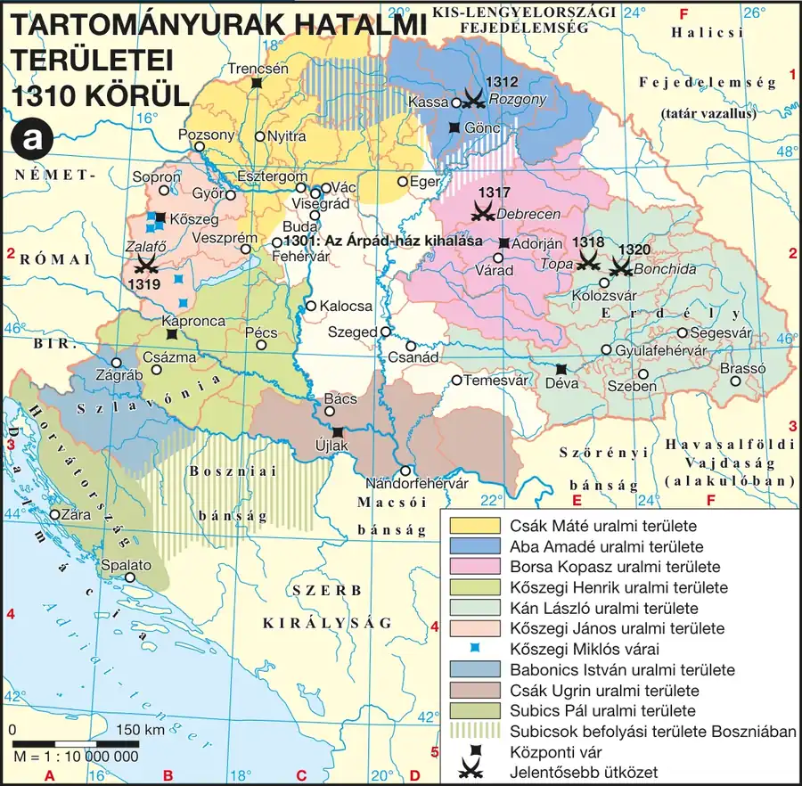

A tartományuraság kora és a trónharc
Be tudod mutatni a tartományuraság jellemzőit és legfontosabb szereplőit, valamint Károly Róbert három koronázásának körülményeit és vetélytársait.
A tartományuraság
1301-ben meghalt az utolsó Árpád-házi király, III. András — halálakor a tartományuraság fénykorát élte. A tartományúr (más néven oligarcha vagy kiskirály) olyan nagybirtokos volt, akinek kiterjedt magánfamiliája volt, ő maga azonban egyetlen más famíliának sem volt tagja — vagyis senkinek nem tartozott hűséggel, csak saját magának. A legerősebb tartományurak — Csák Máté (Északkelet-Magyarország), Kőszegi Henrik (Nyugat-Dunántúl) és Subics Pál (Horvátország-Dalmácia) — legalább 50 várat és 20 vármegyét tartottak kézben. További jelentős tartományurak voltak Aba Amádé, Borsa Kopasz és Kán László.
A tartományuraság egyszerre volt óriásira nőtt nagybirtok és függetlenségre törekvő részállam: az oligarchák önálló pénzt verettek, saját külpolitikát folytattak, és gyakran erőszakosan léptek fel az egyházzal, a jobbágyokkal, a városi polgársággal és a köznemesekkel szemben, akik közül igyekeztek minél több familiárist gyűjteni. Alapvető érdekük az volt, hogy olyan új király és dinasztia kerüljön a magyar trónra, amelyik nem tudja megerősíteni a központi hatalmat.
Károly Róbert három koronázása
A nápolyi Anjou családból származó Károly Róbert (Caroberto) — V. István király dédunokája — 1300-ban érkezett Magyarországra, és a délvidéki horvát urak (Babonicsok, Frangepánok, Subicsok), valamint az egyház támogatását élvezte. 1301-ben megkoronázták magyar királlyá, de nem a Szent Koronával, ezért a főurak nagy része nem fogadta el uralkodónak, és behívta az országba II. Vencel cseh király fiát, aki Vencel néven foglalta el a trónt (1301–1305).
A gyerek Vencel hamarosan visszatért Prágába, és lemondott a magyar trónról a bajor herceg, Wittelsbach Ottó javára, aki 1305–1307 között volt koronázott magyar király, de támogatók híján végül ő is elhagyta az országot. Károly Róbert ezután — miután megtörte az Ottóhoz hű budai polgárok ellenállását — 1308-ban elérte, hogy a két leghatalmasabb tartományúr, Csák Máté és Kőszegi Henrik is elismerje hatalmát; ezután 1309-ben másodszor, majd 1310-ben harmadszor és véglegesen megkoronázták — immár a Szent Koronával, Székesfehérváron, az esztergomi érsek által, ahogy azt a XIII. századra kialakult koronázási rend megkövetelte.
A három koronázás gyakori vizsgacsapda: az első (1301) érvénytelen volt, mert nem a Szent Koronával történt; a második (1309) sem volt teljesen szabályos; csak a harmadik, 1310-es koronázás felelt meg minden feltételnek (Szent Korona, Székesfehérvár, esztergomi érsek). Ezért Károly Róbert uralkodásának kezdetét hivatalosan 1308-tól számítjuk (amikor a legfontosabb tartományurak elismerték), de csak 1310-től volt vitathatatlanul törvényes király.
Kötelező adatok
| Fogalmak | Személyek | Kronológia |
|---|---|---|
| aranyforint, regálé, kapuadó, kilenced, bandérium | I. (Anjou) Károly | 1301: az Árpád-ház kihalása 1308: I. Károly uralkodásának kezdete E1308–1342: I. (Anjou) Károly |
1. forrás
Tartományurak hatalmi területei 1310 körül
A királyi hatalom újjászervezésének kiinduló területi problémáját mutatja.

A pápa levelében kijelenti, hogy Károlyt, aki V. István magyar király egyenes ági leszármazottja, jogos örökösnek ismeri el a magyar trónon, és felszólítja a magyar főpapokat és bárókat, hogy fogadják el uralkodójuknak. A bulla hangsúlyozza, hogy a magyar korona Rómával való szoros kapcsolata régi hagyomány, és a pápaság érdeke, hogy Magyarországon a Szentszékkel jó viszonyt ápoló király uralkodjon.
- Milyen származási alapon vezeti le a forrás Károly Róbert trónigényét?
- Milyen eszközzel próbálta a pápaság érvényesíteni álláspontját a magyar bárók felé?
- Mit jelenthetett Károly Róbert számára a pápai támogatás egy olyan helyzetben, amikor a tartományurak nagy része nem ismerte el uralkodónak?
Ellenőrző feladatok
A tartományúri hatalom felszámolása
Be tudod mutatni Károly Róbert módszereit a tartományurak leverésére, ismered a rozgonyi csata jelentőségét, és tudod, hogyan és mikor ért véget a tartományuraság kora.
Károly módszerei
A megkoronázott, de hatalmában még korlátozott Károly Róbertnek hosszú, fokozatos küzdelemben kellett felszámolnia a tartományúri hatalmat. Ebben a harcban a főpapságra, a nemességre és néhány város polgárságára támaszkodhatott. Károly a helyzethez igazította módszereit: a legerősebb tartományurakat — például Csák Mátét — egy ideig nem háborgatta, míg akiket lehetett, egymás ellen játszott ki. Másokat rászedett — Kán Lászlótól például a vajdai méltóság ígéretével szerezte meg a Szent Koronát. Gyarapodó híveit gazdagon megjutalmazta, és ha alkalom kínálkozott, fegyverhez is nyúlt. Az erősödő Károlyhoz egyre többen csatlakoztak a tartományurak híveiből is.
A rozgonyi csata és a leverés menete
Amikor Kassa polgárai szembekerültek az Abákkal, Károly nem habozott az uralmát egyébként elismerő tartományúrral szemben a város mellé állni. A rozgonyi csatában (1312) a szász polgárokkal összefogva győzte le az Abákat. A király ezután fegyverrel törte meg a Dunántúl nyugati részét uraló Kőszegiek és a tiszántúli Borsa Kopasz hatalmát is. Mivel a tartományurak nem fogtak össze ellene, Károly sorra, egyenként legyőzte őket — köztük Kán Lászlót is. Legjelentősebb ellenfele, Csák Máté területére azonban csak annak halála után, 1321-ben tehette rá a kezét. Végül a Károlyt mindvégig támogató délvidéki urak is behódoltak, így 1324 körül véget ért a tartományuraság korszaka Magyarországon.
Károly négyféle eszközt vetett be a tartományurak ellen: kijátszotta egymás ellen őket, átcsábította familiárisaikat, rászedte egyeseket ígéretekkel, és fegyverrel törte meg azokat, akik nem hódoltak be. Ez a négyes eszköztár — nem csak a katonai erő — jó válasz arra a kérdésre, hogyan tudott egyetlen ifjú uralkodó felülkerekedni több tucat, egyenként is erős tartományúron.
Kötelező adatok
| Fogalmak | Személyek | Topográfia |
|---|---|---|
| bandérium | I. (Anjou) Károly | Visegrád |
2. forrás
A krónikás elmondja, hogy amikor Kassa polgárai fellázadtak az Abák hatalmaskodása ellen, Károly király hadával a szász polgárság oldalára állt. A csatában a király serege, a kassai és eperjesi polgárok fegyveresei, valamint néhány hozzá hű nemesi bandérium mérkőzött meg az Abák és szövetségeseik seregével. A király serege győzelmet aratott, és ezzel megtörte az Abák hatalmát Kassa térségében.
- Kik alkották Károly seregét a forrás szerint a rozgonyi csatában?
- Milyen politikai üzenete volt annak, hogy a király a polgárok oldalára állt egy tartományúrral szemben?
- Milyen jellegű alakulatok vívták meg a csatát, és milyen következtetést vonhatunk le ebből a kortárs magyar hadviselésre nézve?
Ellenőrző feladatok
A hatalom megszilárdítása
Be tudod mutatni a familiaritás rendszerét és az új bárói réteg kialakulását, ismered a honorbirtok fogalmát, és tudod, mi történt Zách Felicián merényletében.
Familiaritás és az új arisztokrácia
A bárók a birtokaik vonzáskörzetében élő nemességet szolgálatukba fogadták: velük irányíttatták birtokaikat, ők vezették magánhadseregeiket, és az országos méltóságaikból fakadó ügyeket is az őket szolgáló nemesek segítségével intézték. A bárók szolgálatába szegődött nemeseket familiárisoknak, magát a rendszert familiaritásnak nevezzük. A familiaritás sokban hasonlít a nyugati hűbériséghez, ám alapvetően különbözik attól abban, hogy a familiáris a királytól, és nem az urától kapta a birtokát, valamint hogy ez a viszony nem öröklődött.
Károly Róbert a tartományurak leverésével jelentősen megnövelte a királyi birtokállományt. Ugyanakkor adományokkal az őt támogató familiárisokból új, a személyéhez hű bárói réteget hozott létre — ilyen új családok voltak a Garaiak, Lackfiak, Újlakiak és Szécsiek. Az új főnemeseket nemcsak a hála, hanem az anyagi érdek is a királyhoz kötötte: jövedelmük nagyobbik része a király által adományozott méltóságokból (nádor, vajda, tárnokmester stb.) származott. Ezekkel a méltóságokkal ugyanis együtt járt bizonyos királyi várak és földek birtoklása — ezt nevezzük honorbirtoknak. Mivel a méltóságokat az uralkodó gyakran újraosztotta, a bárók jövedelme jelentős részben a királyi kegytől függött. A hűséges bárók és Károly familiárisai élvezhették a királyi udvar fényét és lovagi külsőségeit — 1326-ban a király Szent György Lovagrendet is alapított, amelyben a leghűségesebb bárók tömörültek.
A Zách-merénylet (1330)
Károly Róbert belpolitikája az 1320-as évek közepétől elcsöndesedett, egyetlen kivétellel: 1330-ban Zách Felicián merényletet kísérelt meg a királyi család ellen. A királynak nem esett bántódása, de a védekezésre emelt kezű királyné négy ujját a merénylő kardja levágta. A merénylőt azonnal megölték, testét feldarabolták, és intő példaként szétküldték az ország különböző részeibe; a Zách családra és nemzetségre pedig rendkívül szigorú büntetéseket (kivégzéseket, vagyonelkobzást) szabtak ki. A merénylet mögötti indítékot a történészek vitatják: egyesek a tartományuraság utolsó rezdülését látják benne, míg az epikus hagyomány (Arany János balladája) személyes motívumot említ — Zách Felicián lányát, Klárát a királyné öccse, Kázmér megbecstelenítette.
A Zách-merénylet jó példa arra, hogyan él egymás mellett a történeti magyarázat (a tartományuraság utolsó fellángolása) és az epikus hagyomány (a sértett becsület bosszúja). Az érettségin mindkettőt érdemes megemlíteni, jelezve, melyik melyik forrástípusból ered — ez önmagában forráskritikai teljesítmény.
Kötelező adatok
| Fogalmak | Emelt szinten |
|---|---|
| bandérium | Ehonorbirtok, familiaritás |
3. forrás
A bárók birtokaik környezetében élő nemeseket fogadtak szolgálatukba: ezek a familiárisok igazgatták uraik birtokait, és háború esetén annak magánhadseregében, a bandériumban katonáskodtak. A familiáris viszony sokban hasonlít a nyugat-európai hűbériséghez, abban azonban különbözik tőle, hogy a familiáris a birtokát nem az urától, hanem a királytól kapta, és a viszony nem volt örökíthető, ellentétben a nyugati hűbérbirtokkal.
- Nevezze meg a familiáris két fő feladatát a forrás alapján!
- Fogalmazza meg, miben különbözik a familiaritás a nyugat-európai hűbériségtől!
- Milyen politikai jelentősége volt annak, hogy a familiáris nem az urától, hanem a királytól kapta birtokát?
Ellenőrző feladatok
Gazdasági reformok I — bányareform és aranyforint
Be tudod mutatni a bányaregálé reformját, a nemesfém- és pénzverési monopóliumot, és ismered az aranyforint bevezetésének körülményeit és jelentőségét.
A gazdasági reform alapjai
A XIV. század elején már megértek a feltételek arra, hogy a király a korábbi, királyi birtokból beszedett domaniális jövedelmek helyett a királyi jogon beszedett regálé jövedelmekre támaszkodjon. A reform alapját az jelentette, hogy Magyarország rendkívül gazdag volt nemesfémekben: 1330 és 1380 között Magyarország adta Európa aranytermelésének mintegy 75%-át (évi kb. 2500 kg), és jelentős volt az ezüsttermelése is (évi kb. 10 000 kg). A reformfolyamatot Nekcsei Demeter tárnokmester irányította.
A bányaregálé (urbura) reformja
Az Árpád-korban a király kiváltságolt bányászai a kitermelt arany egytizedét, az ezüst egynyolcadát adták át a királynak — ez volt a bányaregálé (urbura). Korábban az a terület, amelyen bányát fedeztek fel, csere útján a királyé lett, ami visszatartotta a földbirtokosokat attól, hogy bányanyitást engedélyezzenek földjükön. Károly Róbert ezt megváltoztatta: Ea földbirtokosok immár megtarthatták a bányát rejtő területet, maguk is nyithattak bányát, és a király lemondott a földesúr javára az urbura egyharmadáról is. Bár ez elvileg csökkentette volna a kincstár bevételét, a fellendülő bányászkodás és az ebből fakadó többletbevétel bőven ellensúlyozta a veszteséget.
A nemesfém- és pénzverési monopólium
Az 1320-as évektől tilos volt a kitermelt nyersfémet adni-venni és kivinni az országból — korábban ugyanis a kereskedők megvették és kivitték a nemesfémet, amiből a királynak alig származott haszna. Ezután a kitermelt fémet a királyi kamarák (kincstári hivatalok) vásárolták fel, az általuk meghatározott beváltási árfolyamon, amely az ezüstnél 35%-os, az aranynál 40%-os hasznot biztosított a kincstárnak.
A felhalmozott nemesfémből Károly Róbert Firenzéből hozatott mesterek segítségével, firenzei mintára új, értékálló pénzt veretett: az első aranyforint 1325-ben készült el. Az érme előoldalán Keresztelő Szent János, hátoldalán az Anjouk liliomos címere volt látható. Váltópénzei az ezüstgaras és az ezüstdénár voltak (1 aranyforint = 16 ezüstgaras = 96 ezüstdénár). Az intézkedések nyomán fellendült a bányászat a Garam menti bányavárosokban — Körmöcbányán, Selmecbányán, Besztercebányán —, és Magyarország Európa fő aranytermelőjévé vált.
A bányareform logikája fordított a mai megszokotthoz képest: Károly lemondott a korábbi teljes állami monopóliumról (a bányanyitás jogáról), mert így a földbirtokosok érdekeltté váltak a bányászat fellendítésében — a kisebb részesedés egy sokkal nagyobb, növekvő gazdaságból végül nagyobb összbevételt hozott. Ez a fajta „engedj, hogy többet nyerj” logika jó esszéérv.
Kötelező adatok
| Fogalmak | Topográfia |
|---|---|
| aranyforint, regálé | Körmöcbánya, Selmecbánya, Besztercebánya |
4. forrás
A király elrendeli, hogy ezentúl azon a földbirtokon, ahol bányát nyitnak, a föld ura maga is nyithat bányát, és a bányanyitás nem jár a terület elvesztésével, mint korábban. A kitermelt nemesfém után fizetendő urburából a földbirtokos megkapja az egyharmad részt, a fennmaradó kétharmad a királyi kincstárat illeti. A rendelkezés célja, hogy a földesurak maguk is érdekeltek legyenek új bányák felkutatásában és megnyitásában.
- Mi változott a korábbi gyakorlathoz képest a bányát rejtő földterület tulajdonjogában?
- Mekkora részt kapott a földbirtokos az urburából a rendelkezés szerint?
- Milyen gazdasági célt szolgált a reform, és miért lehetett ez hosszú távon a királynak is előnyös annak ellenére, hogy lemondott az urbura egy részéről?
Ellenőrző feladatok
Gazdasági reformok II — a kapuadó és a városok
Be tudod mutatni a kapuadó bevezetésének okát és mechanizmusát, ismered a további regálékat, és el tudod helyezni a magyar városhálózat típusait a XIV. századi gazdaságban.
Az évenkénti pénzváltás megszűnése és a kapuadó
Az értékálló, évente már nem beváltott aranyforint és ezüst váltópénz megjelenésével a király elvesztette az addigi évenkénti pénzbeváltásból származó bevételét, a kamara hasznát. Ennek pótlására vezette be 1336-ban a kapuadót (portális adót): minden olyan kapu után, amelyen egy szénásszekér átfért, évente 18 ezüstdénárt kellett fizetni a királyi kincstárnak; ahol nem volt ekkora kapu, ott csak a felét. Az adót a jobbágyok fizették portánként (kapunként), nem személyenként.
A pénzben fizetendő adó bevezetését az tette lehetővé, hogy a jobbágy ekkorra már el tudta adni terménye egy részét a piacon — az árutermelés kibontakozásával és a pénzgazdálkodás fejlődésével a városok is megerősödtek.
További regálék
- Rendkívüli adó — a korábbi századokban szokásos volt az utazó királyi udvar vendéglátása; ennek megszűnésével ezt a rendkívüli adó váltotta fel.
- Harmincadvám — a megnövekedett külkereskedelmi forgalomra kivetett határvám.
- Kiváltságosok és városok adói — a szászok, jászok, kunok és egyéb kiváltságolt csoportok, valamint a városok külön adói.
- EEgyházi tized egy része — Károly Róbert esetenként lefoglalta a pápaságnak juttatott tizedrészt (általában a tized egyharmadát, amelyre a pápaság rendkívüli események idején tartott igényt).
A gazdaság fejlődése biztosította, hogy a harmincadvám is jelentős bevételt hozzon. A külkereskedelemben a beérkező iparcikkekért (szövetek, fegyverek, egyéb fémáruk) Magyarország döntő mértékben aranypénzzel és részben élelmiszerrel (élő marha, bor) fizetett.
A városhálózat típusai
Magyarországon viszonylag kevés nyugati típusú város jött létre — olyan, amelyben megjelentek a céhek. Ezek voltak a nagy önállósággal rendelkező, fallal körülvett szabad királyi városok és a bányavárosok. A városok zöme azonban földesúri joghatóság alatt álló mezőváros volt: ezeknek a mezőgazdasági jellegű településeknek a korlátozott önállóságát legfőképp az jelentette, hogy adójukat egy összegben fizették.
Kötelező adatok
| Fogalmak | Kronológia |
|---|---|
| kapuadó, kilenced | 1336: a kapuadó bevezetése |
5. forrás
A király elrendeli, hogy mivel az új, értékálló pénz bevezetésével megszűnt az évenkénti pénzváltásból származó jövedelme, ezentúl minden portától (kapu, amelyen egy szénásszekér átfér) tizennyolc dénár adót kell fizetni évente a királyi kincstárnak. Ahol a kapu ennél kisebb, ott csak a felét kell megfizetni. Az adó megfizetése alól sem a nemesek, sem az egyházi birtokok jobbágyai nem mentesülnek.
- Milyen okra vezeti vissza a király az új adó bevezetésének szükségességét?
- Kiket érintett közvetlenül ez a rendelkezés?
- Miért lehetett pénzügyileg kedvező az uralkodó számára ez a reform az évenkénti pénzváltáshoz képest?
Ellenőrző feladatok
Károly Róbert külpolitikája és a visegrádi királytalálkozó
Be tudod mutatni Károly Róbert külpolitikájának három irányát, a posadai vereséget, és részletesen ismered az 1335-ös visegrádi királytalálkozó céljait és eredményeit.
Három külpolitikai irány
Károly Róbert három irányban igyekezett aktív külpolitikát folytatni. Itáliában megpróbálta fenntartani trónigényét a nápolyi Anjouknál: fia, András eljegyezte, majd feleségül vette a nápolyi trón örökösnőjét, Johannát. A Balkánon szerette volna újraéleszteni a korábbi évszázadokban a Magyar Királyságtól függő területek feletti ellenőrzést, ezért 1330-ban hadjáratot indított Basarab havasalföldi vajda ellen — a hadjárat során azonban Basarab seregei a Kárpátok egyik szorosában tőrbe csalták a magyar sereget (posadai csata), ahonnan maga Károly Róbert is csak nehezen tudott elmenekülni; a vállalkozás így kudarcba fulladt.
Közép-Európa és a visegrádi királytalálkozó
Károly Róbert Közép-Európában igyekezett jó kapcsolatot fenntartani a szomszédos országokkal — dinasztikus politikáját mutatja, hogy harmadik felesége cseh, negyedik felesége (Łokietek Ulászló leánya, Erzsébet) lengyel uralkodócsaládból származott. 1335-ben Visegrádon cseh–lengyel–magyar hármas királytalálkozót tartottak, amelynek két fő eredménye volt:
| Megállapodás | Tartalma | Eredménye |
|---|---|---|
| Cseh–lengyel kibékítés | Károly Róbert kibékítette I. János cseh és III. Kázmér lengyel királyt | János lemondott lengyel trónigényéről, Kázmér Sziléziáról — sikeres |
| Új kereskedelmi útvonal | a három uralkodó megállapodott egy Bécset elkerülő, királyi védelem alatt álló új útvonalról | meghiúsult: a kereskedők a jól bevált Duna-menti útvonalat használták tovább |
Fontos utólagos árnyalás: a Bécs szerepét csökkenteni kívánó terv végül azért bukott meg, mert a kereskedelmi útvonalak alakulásában a gazdasági és földrajzi tényezők nagyobb szerepet játszottak, mint a politikai döntések — a kereskedők a biztonságosabb és olcsóbb Duna-menti utat részesítették előnyben.
Dinasztikus örökség
Dinasztikus politikája eredményeként Károly Róbert biztosította, hogy elsőszülött fia, Lajos örökölje a lengyel trónt — ezt 1339-ben III. Kázmér lengyel királlyal kötött megállapodás rögzítette, amely szerint Kázmér utód nélküli halála esetén Lajos örökli a lengyel koronát. Kisebbik gyermeke, András igényét a nápolyi trónra házassági szerződéssel (a Johannával kötött házassággal) alapozta meg.
Károly Róbert 1342-es halálakor gazdaságilag megerősödött, a királyi hatalom erejét reformokkal visszanyerő, a térségben aktív szerepet játszó országot hagyott örökül fiának, Lajosnak.
A visegrádi királytalálkozó kiváló példa arra, hogy egy politikai megállapodás részlegesen sikeres is lehet: a diplomáciai cél (cseh–lengyel béke) teljesült, a gazdasági cél (Bécs megkerülése) viszont nem — mert a gazdaság logikája erősebbnek bizonyult a politikai szándéknál. Ez a fajta árnyalt értékelés — nem „sikeres” vagy „sikertelen”, hanem „részben” — a történelmi gondolkodás szempontnál hoz pontot.
Kötelező adatok
| Kronológia | Topográfia |
|---|---|
| 1335: a visegrádi királytalálkozó | Visegrád, Lengyelország, Csehország, Bécs |
6. forrás
A három uralkodó — a magyar, a cseh és a lengyel király — Visegrádon gyűlt össze. Megegyeztek abban, hogy János cseh király lemond a lengyel trónra vonatkozó igényéről, Kázmér lengyel király pedig Sziléziáról mond le a csehek javára. Megállapodtak továbbá egy új kereskedelmi útvonal megnyitásáról, amely elkerülné Bécs városát, és amelyet mindhárom uralkodó katonai védelemben részesítene, hogy a kereskedők ne az osztrák várost válasszák áruik szállítására.
- Foglalja össze tömören a visegrádi megállapodás két fő pontját!
- Melyik uralkodó melyik igényről mondott le a forrás szerint?
- Miért próbálták elkerülni Bécset az új kereskedelmi útvonallal? Sikerült-e ez hosszú távon?
Ellenőrző feladatok
Fogalomtár és kronológia
Fogalomtár — gépeld be, amit keresel
Kronológia
Topográfia — mit kell megmutatni az atlaszban?
- A tartományurak területei: Csák Máté (Északkelet-Magyarország), Kőszegi Henrik (Nyugat-Dunántúl), Subics Pál (Horvátország-Dalmácia).
- A hatalommegszilárdítás helyszínei: Rozgony (Kassa mellett), Visegrád.
- A bányavárosok: Körmöcbánya, Selmecbánya, Besztercebánya (a Garam mentén).
- A külpolitika helyszínei: Nápoly (Itália), Havasalföld (a posadai csata), Bécs, Lengyelország, Csehország.
Érettségi típusú komplex feladatok
A három feladat az írásbeli I. részének mintájára készült: forrásalapú, több részkérdésből áll, és részpontokra megy. Oldd meg papíron, majd nyisd meg a pontozott megoldást.
Adott három évszám: 1301, 1308, 1310.
- Nevezze meg mindhárom évszámhoz a hozzá kapcsolódó eseményt! (6 pont)
- Nevezze meg, melyik koronázás volt az egyetlen, amely minden feltételnek megfelelt, és sorolja fel ezeket a feltételeket! (4 pont)
- Nevezze meg Károly Róbert két vetélytársát, akik közbeeső időszakban koronázott magyar királyok voltak! (2 pont)
- Nevezze meg, melyik évben verték az első aranyforintot! (1 pont)
- Nevezze meg, mekkora hasznot biztosított a kincstárnak a nemesfém-felvásárlási árfolyam aranynál és ezüstnél! (2 pont)
- Nevezze meg a kapuadó bevezetésének évét és a befizetendő összeget! (2 pont)
- Fogalmazza meg az ok-okozati összefüggést az aranyforint bevezetése és a kapuadó bevezetése között! (3 pont)
„A három uralkodó Visegrádon gyűlt össze. Megegyeztek, hogy János cseh király lemond a lengyel trónigényről, Kázmér lengyel király pedig Sziléziáról mond le. Megállapodtak egy Bécset elkerülő új kereskedelmi útvonal létesítéséről is.” (tartalmi kivonat)
- Nevezze meg a találkozó évét és a három résztvevő országot! (4 pont)
- Nevezze meg, melyik célkitűzés valósult meg, és melyik nem! (2 pont)
- Magyarázza meg, miért hiúsult meg a kereskedelmi útvonalról szóló terv! (2 pont)
- Nevezze meg, melyik későbbi dinasztikus megállapodás épített tovább a visegrádi jó viszonyra! (2 pont)
Esszéírás — szerkezet, minta, szószámláló
Fontos: ez a témakör mindig magyar történelmi
Károly Róbert uralkodása magyar történelmi téma, ezért középszinten kizárólag a hosszú esszében (210–260 szó) szerepelhet, a rövid esszé ilyenkor egyetemes témát dolgoz fel. Emelt szinten bármelyik esszétípusban előfordulhat.
Kidolgozott hosszú esszé
Mutassa be a források és ismeretei segítségével I. Károly gazdasági reformjait, és fejtse ki, hogyan alapozták meg a királyi hatalom megerősödését! (hosszú esszé, 210–260 szó)
Mintamegoldás · 235 szóA feladat I. Károly gazdasági reformjainak bemutatását kéri, kitérve azok politikai jelentőségére.
A XIV. század elején megértek a feltételek arra, hogy a király a domaniális jövedelmek helyett a regálékra támaszkodjon — ezt Magyarország kivételes nemesfémgazdagsága tette lehetővé: az ország 1330 és 1380 között Európa aranytermelésének mintegy háromnegyedét adta. Nekcsei Demeter tárnokmester irányításával Károly átalakította a bányaregálét: a földbirtokosok megtarthatták a bányát rejtő területet, és az urbura egyharmadát is megkapták, ami érdekeltté tette őket az új bányák nyitásában.
1320-tól tilos lett a nyersfém kivitele, azt a királyi kamarák vásárolták fel jelentős haszonnal. A felhalmozott nemesfémből 1325-ben megverték az első aranyforintot, firenzei mintára. Az értékálló pénz miatt azonban a király elvesztette az évenkénti pénzváltás hasznát, ezért 1336-ban bevezette a kapuadót, portánként 18 dénár értékben.
E reformok politikai jelentősége abban áll, hogy a regálé jövedelmek — szemben a domaniális jövedelmekkel — nem függtek a bárók kegyétől, hanem közvetlenül a királyi kincstárba folytak be. Ez tette lehetővé, hogy Károly erős királyi bandériumot tartson fenn, és megjutalmazza a hozzá hű, familiárisokból emelt új bárói réteget. A gazdasági reform tehát nem öncélú volt: a megerősödött királyi hatalom katonai és politikai alapját is megteremtette.
Miért működik? Az első mondat visszahangozza a feladatot. A bekezdések logikus sorrendben haladnak: alapok → bányareform → pénzreform → politikai összefüggés. A záró mondat nem ismétel, hanem értékel: kimondja, miért nem öncélú a gazdasági reform — ez a „történelmi gondolkodás” szempontnál hoz pontot.
Írd meg te — élő szószámlálóval
A szöveg csak ebben a böngészőablakban él — frissítéskor elvész.
Gyakorló esszétémák
- E1 — Mutassa be a tartományuraság jellemzőit, és fejtse ki, hogyan számolta fel Károly Róbert az oligarchák hatalmát! (hosszú)
- E2 — Mutassa be a familiaritás rendszerét és az új bárói réteg kialakulását Károly Róbert korában! (hosszú)
- E3 — Fejtse ki I. Károly bányareformját és az aranyforint bevezetésének jelentőségét! (hosszú)
- E4 — Mutassa be I. Károly külpolitikájának három irányát, és értékelje sikerességüket! (hosszú)
- EE5 — Hasonlítsa össze I. Károly domaniális és regálé jövedelmekre épülő gazdaságpolitikáját, és értékelje, miért volt ez politikailag is előnyös! (komplex/összehasonlító)
Tételvázlat és vizsgáztatói kérdések
A királyi hatalom újbóli megszilárdítása Anjou I. Károly idején, a visegrádi királytalálkozó.
A válaszában térjen ki a tartományuraság felszámolására, a hatalom gazdasági alapjaira és a visegrádi királytalálkozóra! Használja a mellékelt forrásokat és az atlaszt!
Felelet-váz (kb. 15 perc)
| Perc | Rész | Tartalom |
|---|---|---|
| 0–2 | Bevezetés | A tartományuraság jellemzői 1301-ben; Károly Róbert három koronázása. |
| 2–6 | A hatalom felszámolása | Rozgony (1312), Csák Máté halála (1321), a tartományuraság vége (1324). Forrás: a rozgonyi csata. |
| 6–10 | Gazdasági alapok | Bányareform, urbura, aranyforint (1325), kapuadó (1336). Forrás: a bányareform. |
| 10–15 | Külpolitika, zárás | Posadai vereség, visegrádi királytalálkozó (1335). Atlasz: Visegrád, Havasalföld. Zárás: gazdasági reform és politikai megerősödés összefüggése. |
Várható vizsgáztatói kérdések
- Miért nem volt érvényes az 1301-es koronázás?
- Milyen módszereket alkalmazott Károly Róbert a tartományurak ellen?
- Mi a különbség a familiaritás és a nyugat-európai hűbériség között?
- Miért volt kedvező a királynak, hogy lemondott az urbura egy részéről?
- Miért vezették be a kapuadót?
- EMiért hiúsult meg a visegrádi kereskedelmi útvonal terve?
Tíz érettségi tipp ehhez a témakörhöz
- Ez a témakör mindig magyar történelmi. Középszinten csakis a hosszú esszében szerepelhet — készülj fel rá alaposan, mert nagy eséllyel előkerül.
- A három koronázást fejből tudd! 1301 (érvénytelen), 1308 (a tartományurak elismerik), 1310 (végleges, a Szent Koronával). Ez a leggyakoribb csapdapont.
- Négy eszközt köss Károly hatalomfelszámolásához. Kijátszás, familiáris-átcsábítás, becsapás, fegyver — ez a négyes eszköztár jó válasz bármilyen „hogyan” kérdésre.
- Ne keverd a domaniális és a regálé jövedelmet! Domaniális = a királyi birtokból; regálé = királyi jogon, pénzben (urbura, kapuadó, harmincadvám mind regálé).
- A forrás nem díszlet. Minden esszében legalább kétszer hivatkozz rá konkrétan — a forráshasználat a szóbelin 12 pontot ér.
- Kösd össze az aranyforintot és a kapuadót ok-okozati lánccal! Az értékálló pénz megszüntette a kamara hasznát, ezért kellett a kapuadó — ez klasszikus vizsgakérdés.
- Kösd össze az évszámokat eseményekkel. 1312 (Rozgony), 1321 (Csák Máté halála), 1325 (aranyforint), 1330 (Zách-merénylet, posadai csata), 1335 (Visegrád), 1336 (kapuadó) — ezek önmagukban is kérdezhetők.
- Ne mondd „sikeres” vagy „sikertelen” egyértelműen a visegrádi találkozóról! A diplomáciai cél teljesült, a gazdasági nem — ez az árnyalt értékelés plusz pontot ér.
- A familiaritás és a honorbirtok emelt szintű, de fontos fogalompár. A honorbirtok a méltósághoz kötött, nem örökölhető birtok — ez különbözteti meg a hűbérbirtoktól.
- Gyakorolj időre. A hosszú esszére 45–50 perc jusson; a szóbeli 30 perces felkészülési idejében készíts a fenti perc-beosztást követő vázlatot.